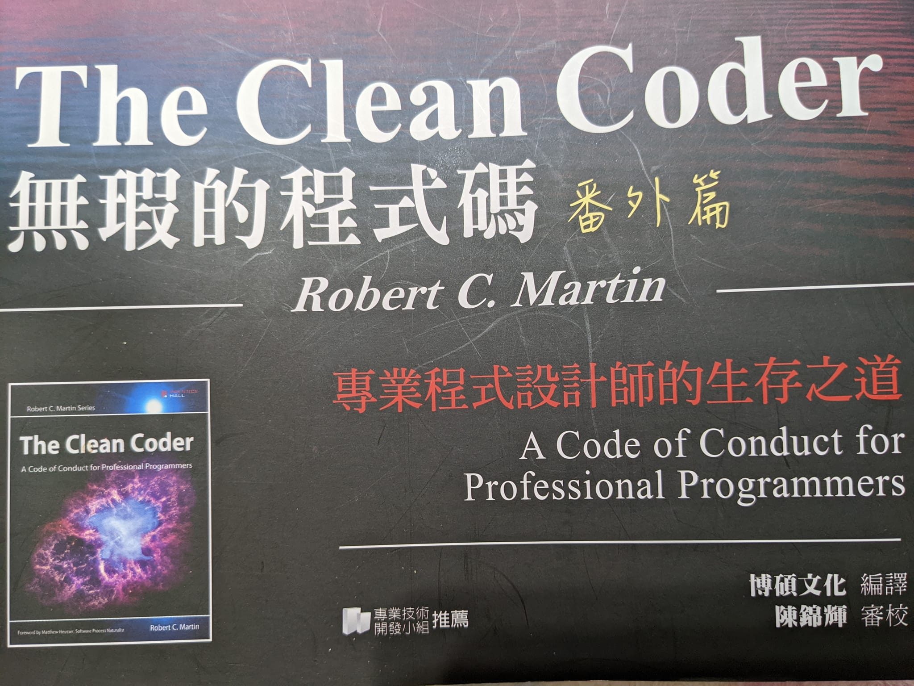

無瑕的程式碼番外篇 - 寫程式

大家好，我是 Cindy，最近發現無暇程式碼的番外篇蠻好看的，適合在職場打滾的工程師們看，比起 clean code，the clean coder 比較算是軟實力的部分，主要是在說身為一個專業的工程師應該要有怎麼樣的態度、原則與行動。
今天這篇是這篇會是第四章節的重點及心得整理，想先看之前章節的人可以點選下面連結：
作者從他練習打字的故事，帶出他發現要精熟掌握每項技藝，關鍵都是要具備『信心』和『出錯感知』。作者強調本章節提到的原則，是源自於作者本身在寫程式的心理、精神和情緒，而這些會是『信心』和『出錯感知』的泉源。而原則不一定適用於所有人，是作者的經驗談。
畫重點
- 聚精會神：
- 關注點：
- 程式碼能正常工作。
- 程式碼能解決需求方提出的問題。
這裡很重要的一點是，常常需求方自己提出的解決方案並不能夠真的解決他們想要解決的問題，有時候需要來回確認才能夠得到真正的問題點，這裡是我目前覺得對我來說相對比較困難的部分。
- 程式碼能與現有系統結合的天衣無縫。
- 其他程式設計師必須能讀懂你的程式碼。
作者有提到說不只要寫好註解，程式碼也要經過精心錘鍊，讓程式碼可以表達程式設計意圖，作者表示這應該是程式設計師最難精通的一件事。
- 當你無法全神貫注地寫程式時，所寫的程式碼就有可能出錯。
作者提到說他最糟糕的程式碼是在凌晨 3 點寫出來的程式碼，當時他覺得好極了但其實完全是個錯誤的設計，之後這段程式碼不停地回來肆虐他們，最後還變成團隊裡的一個笑話。
- 如果感到心煩意亂，千萬不要寫程式。免強為之，最終只能回頭重做。相反，你必須找到一種方法來消除干擾，讓心緒平靜下來。
- 關注點：
- 如果我們能夠做些事情避免甚或消彌除錯工作，那是最理想不過的。
- 製造出許多 bug 的軟體開發人員也不專業。
- 管理延遲的要訣，便是早期檢測和保持透明。最糟糕的情況是，你一直都在告訴每個人你會按時完成工作，到最後期限來臨前你還在這樣說，但最終你只能讓他們大失所望。相反地，要根據目標定期衡量進度。
- 唯一能夠加快進度的方法便是縮減範圍。不要經受不住誘惑盲目衝刺。
作者提到，如果可憐的開發人員在壓力之下最終屈服，同意盡力趕上截止日期，結局會十分悲慘。那些開發人員開始抄近路，會額外加班工作，抱者創造奇蹟的渺茫希望。這是製造災難的最佳秘訣，因為這總做法會給自己、給團隊以及利害相關的各方帶來了一個錯誤的期望。這樣每個人都可以避免面對真正的問題，並將做出『必要而艱難的決定』的時機不斷延後。
這邊即便最後做出來了，做出來的東西也會相當危險（不穩定，而且可能會有很多問題，要修改也可能相當難改），其中用了什麼方法抄近路也是蠻恐怖的一件事情，我想當每個開發人員在意識到自己快死了應該就是這樣的警訊？ - 不應該採用額外加班工作的方案，除非以下三個條件都能滿足：
- 你個人能擠出這些時間
- 短期加班，最多加班兩週
- 你的老闆要有後備方案，以防萬一加班措施失敗
- 如果連續兩三個星期都要加班工作，則加班的措施必敗無疑。
- 在程式設計師所能表現的各種不專業行為中，最糟糕的是，明知道還沒有完成任務卻宣稱已經完成。
- 如果幫助唾手可得，卻讓自己一個人杵在那裡，是很不專業的表現。
- 花時間親自輔導手底下的年輕程式設計師，是資深程式設計師的專業職責所在。
- 向資深導師尋求輔導，也是年輕程式設計師的專業職責。
另外本章節作者也有提到他比較不推崇進入 flow 的狀態來寫程式，他推薦 pair programming 的方式，但我沒有百分百同意作者的想法，就給大家自己翻書來看看囉。